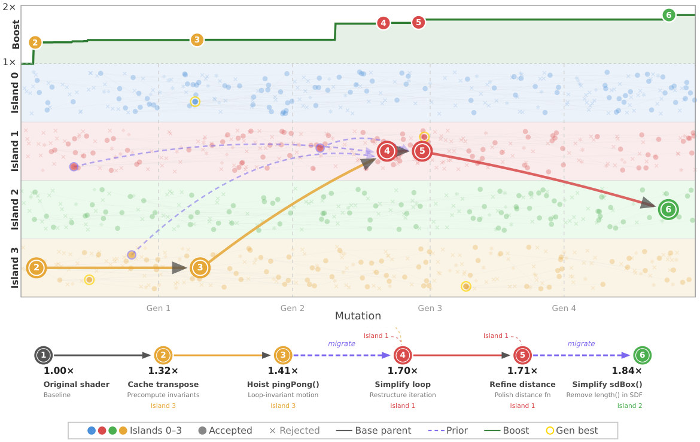
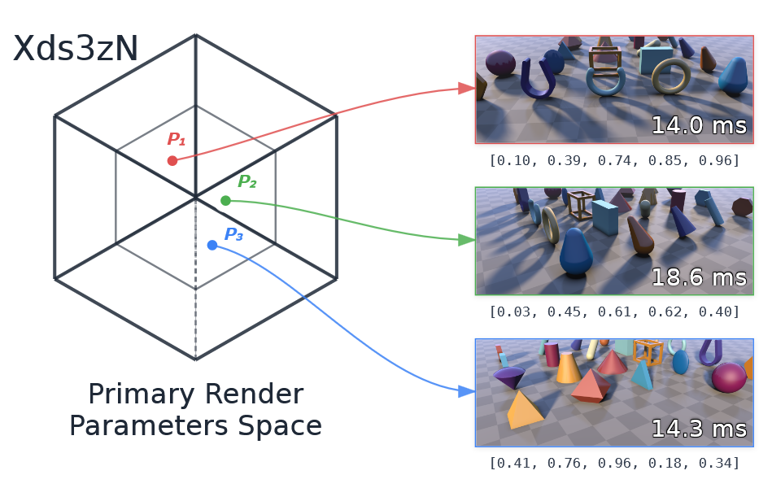
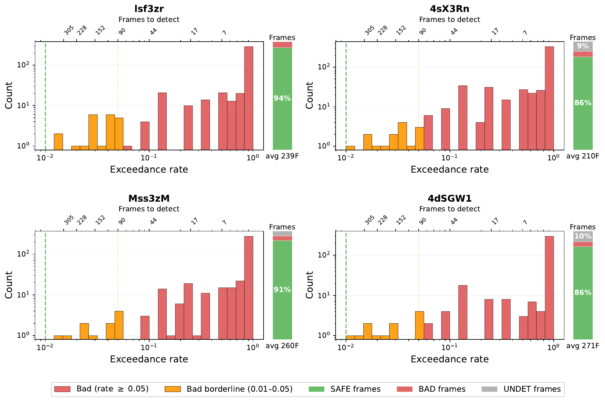
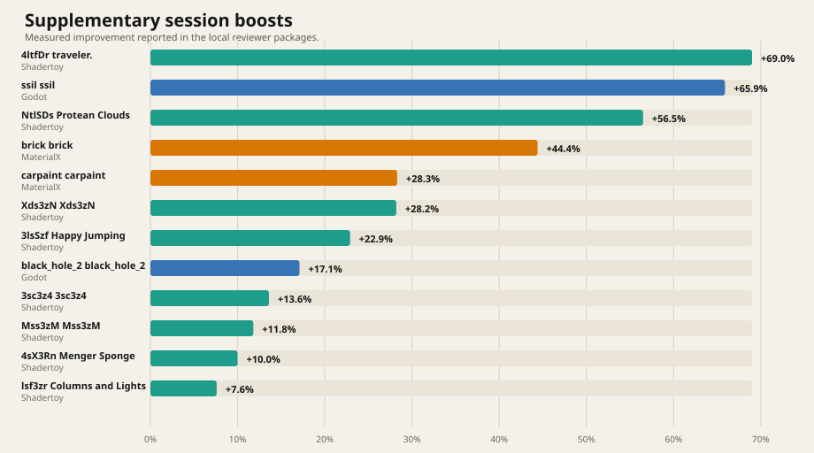

Search dynamics
Accepted ancestry chain
The mutation figure follows one successful run and shows how useful edits accumulate along the accepted lineage instead of appearing as one-shot improvements.

We optimize rendering programs by generating candidate code changes with LLMs, validating them over a renderer-specific parameter space, and evolving only the visually safe ones. The core technical point is not mutation alone but cheap rejection of unsafe candidates through Bayesian sequential validation in PRPS.
Search dynamics
The mutation figure follows one successful run and shows how useful edits accumulate along the accepted lineage instead of appearing as one-shot improvements.

Shadertoy · traveler.
Shadertoy · Protean Clouds


Godot · SSIL render pass
PRPS example
Xds3zN is a concrete PRPS example from the paper: validation samples points in a renderer-specific parameter space rather than relying on one screenshot. In the MaterialX setting, this space reaches up to 34 dimensions.

Validation cost
Most bad candidates are rejected quickly, but candidates near the tolerance boundary need hundreds of frames. Under a conservative 99% policy, those borderline cases force 5-10x more frames on every safe candidate.

Local summary
The chart below is generated directly from the local session summary and shows the measured spread of reported boosts across the reviewer packages.

Sessions